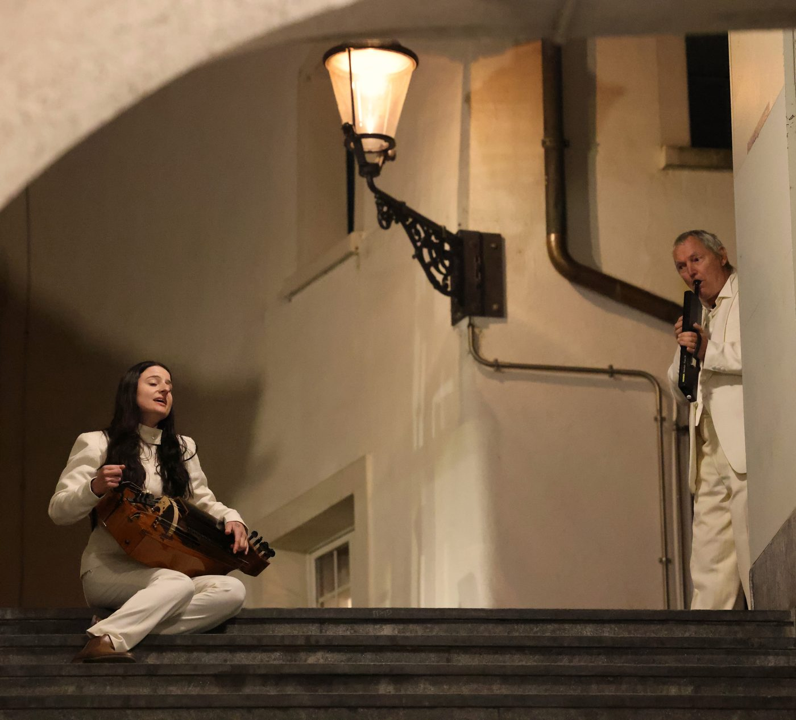
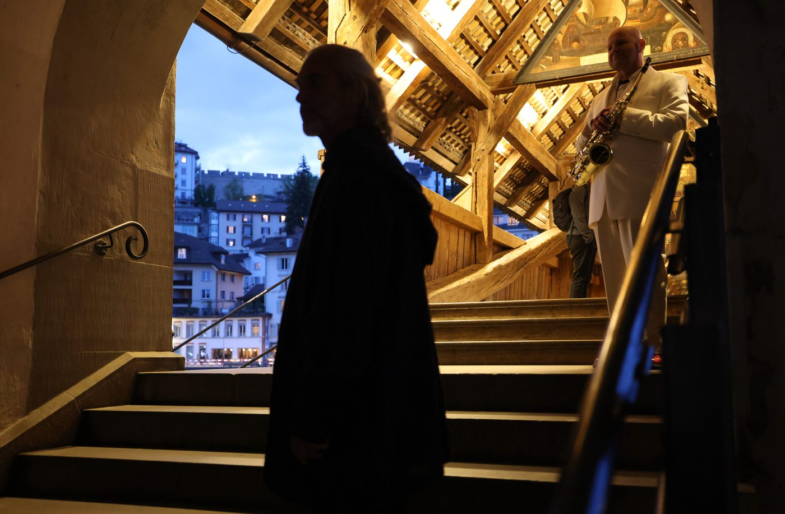

Baltz Mengis
Ein theatraler KlangGang durch die Eingeweide des 17. Jahrhunderts · Premiere am 22. April 2022 in Luzern
Das Projekt nähert sich dem Luzerner Scharfrichter Baltz Mengis aus dem 17. Jahrhundert durch einen theatralen Klanggang in der Luzerner Altstadt. Basierend auf historischen Recherchen wurde ein dramatischer Text verfasst, der die Figur des Scharfrichters und seiner Opfer humanisiert darstellt. Das Stück behandelt zeitlose Themen wie Schuld, Sühne und den Tod.
Der Klanggang endete in der Peterskapelle mit einem raumfüllenden Oratorium, das Musik und Videoelemente kombinierte.
- Komposition, Piano, Harmonium
- John Wolf Brennan
- Text
- Ueli Blum
- Regie
- Buschi Luginbühl
- Spiel
- Franziska Senn, Reto Baumgartner
- Choreografie
- Mariana Coviello
- Gesang, Drehleier
- Anna Murphy
- Saxophon
- Thomas K. J. Mejer
- Video
- Susanne Hofer
- Historische Recherche
- Dunja Bulinsky
- Grafik
- Thomas Küng


